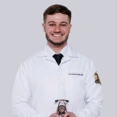
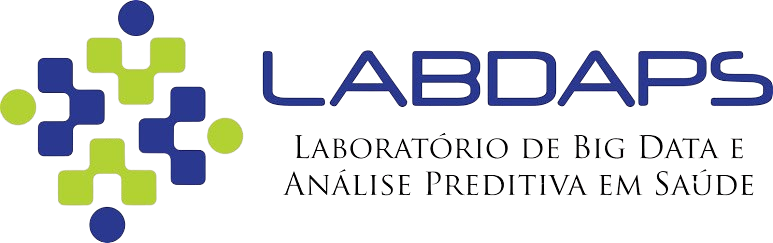

bit.ly/RWE360pdf
Pesquisa Clínica · Hapvida · 2026
Como escalar estudos clínicos e de vida real com recrutamento através de inteligência artificial
260 estudos encerrados (0–1 paciente) em um único centro nos EUA.
Custo: US$ 1M desperdiçado.
Treweek et al., Cochrane, 2018 [1] · Houghton et al., Cochrane, 2020 [2] · Darden et al., JAMA Network Open, 2022 [3] · Brøgger-Mikkelsen et al., JMIR, 2020 [4]
Módulo 1 · Entendendo a IA
Transforma e automatiza processos manuais. LLMs leem prontuários inteiros, extraem dados estruturados, geram sumários clínicos — e fazem triagem em linguagem natural.
🔬 Exemplo real: O sistema RECTIFIER (Stanford, JACC 2024) usou GPT-4 para ler prontuários cardiológicos e avaliar 23 critérios de elegibilidade — com 98–100% de concordância com clínicos, a US$ 0,10 por paciente [11].
GPT-4, LLaMA, Claude · NER clínico · AI Scribe · Sumarização de prontuário
Prevê o futuro. Modelos que aprendem padrões em dados longitudinais para antecipar quem vai desenvolver uma condição, responder a um tratamento ou abandonar um estudo.
🔬 Exemplo real: Na Mayo Clinic, IA aplicada a ECGs de rotina detecta fibrilação atrial assintomática e prediz insuficiência cardíaca antes dos sintomas. Khera et al. (JACC, 2024) mostram que modelos de trajetória cardiovascular podem identificar candidatos a ensaios meses antes do diagnóstico formal [5].
Modelos de trajetória · Risk scoring · Digital twins · Federated learning
"O futuro da medicina não é tratar doenças — é tratar trajetórias."
Khera et al., JACC, 2024 [5]Módulo 2 · IA em RWE e Pesquisa Clínica
Réplicas virtuais de pacientes construídas com dados de prontuário, imagem e laboratório. Simulam resposta a um protocolo antes de recrutar.
O FDA já reconhece digital twins como ferramenta para gerar registros clínicos simulados e prever resposta do grupo placebo (Warraich, JAMA 2025 [6]).
Moingeon, Drug Discov Today, 2023 [7] · Pammi, Lancet Digit Health, 2025 [8]
Substituir braço placebo com dados reais. Reduz N necessário e resolve dilemas éticos em doenças graves.
Exemplo real: O FDA aprovou cerliponase alfa (doença de Batten) usando controles sintéticos — estudo de braço único, 100% RWD, sem placebo (Zannad, JACC 2026 [9]).
Treinar modelos sem mover dados sensíveis. Colaboração multi-institucional com privacidade preservada.
Evidência: Modelos federados entre 10 instituições alcançam 99% da qualidade de modelos centralizados (Sheller, Sci Rep 2020 [14]). GDPR-compliant by design (Brauneck, JMIR 2023 [15]).
Warraich, JAMA, 2025 [6] · Moingeon, Drug Discov Today, 2023 [7] · Pammi, Lancet, 2025 [8] · Zannad, JACC, 2026 [9] · Sheller, Sci Rep, 2020 [14] · Brauneck, JMIR, 2023 [15]
Módulo 3 · O alicerce
80% dos dados clínicos estão em texto livre. Sem estruturação,
nenhuma IA do mundo vai encontrar o paciente certo.
A Pedra de Roseta dos dados clínicos. 331 fontes, 2.1 bilhões de registros, 34 países. 96–99% dos registros mapeados.
Reich et al., JAMIA, 2024 [16] · Voss et al., 2015 [17]
10M+ conceitos, 136 vocabulários. "Infarto" em CID, texto livre e SNOMED são 3 coisas — SNOMED as unifica.
OHDSI Vocabularies · Reich et al., 2024 [16]
IA transcreve a conversa médico-paciente em tempo real e gera registros estruturados automaticamente. Dados já nascem consultáveis — diagnósticos, exames, medicações.
von Itzstein, JAMA Oncol, 2021 [10] · Meystre, 2023 [20]
Sem OMOP, você não escala multicêntrico. Com OMOP, qualquer operadora se conecta a redes de pesquisa globais.
Ward et al., PLoS ONE, 2024 [18] · Vashisht et al., JAMA Network Open, 2018 [19]
Os dados estão organizados. A infraestrutura existe.
Agora o desafio real:
Milhões
de vidas na base. Como achar
o paciente certo, para o estudo certo, no momento certo?
A gente sabe o que fazer.
Módulo 4 · LLMs em recrutamento clínico
O pipeline que Stanford, NIH, MSKCC e Europa já validaram
RECTIFIER · Stanford · JACC 2024 [11]
98–100% de concordância
Usaram GPT-4 para ler prontuários cardiológicos e avaliar 23 critérios de elegibilidade de um estudo de insuficiência cardíaca. A IA concordou com clínicos em 98–100% dos casos.
Custo por paciente triado: US$ 0,10. Versus horas de revisão manual por um coordenador de pesquisa.
Implementação Real · JCO CCI 2026 [13]
98.348 pacientes triados
Gong et al. implementaram o sistema em 29 estudos oncológicos em um único centro. O LLM triou quase 100 mil prontuários, identificou 825 elegíveis e facilitou 117 inscrições.
Revisão manual caiu 10×. Tempo de triagem por prontuário: de 3,1 para 1,8 minutos (−41%).
TrialMatchAI · Nat Commun 2026 [12]
Sistema end-to-end com RAG + Chain-of-Thought: 92% dos pacientes oncológicos tinham ≥1 estudo relevante no top 20. Acurácia >90% na classificação critério a critério.
TrialGPT adaptado · JAMIA 2026 [21]
Hospital europeu usou LLM local (sem enviar dados para nuvem). Dobrou a taxa de identificação de elegíveis: 81,8% vs 36,4% na triagem manual.
Cunningham et al., JACC, 2024 [11] · Abdallah et al., Nat Commun, 2026 [12] · Gong et al., JCO CCI, 2026 [13] · Syed et al., JAMIA, 2026 [21]
Hapvida · Pipeline em ação · Processo contínuo
Automático
Todo dia às 2h da manhã, o sistema coleta consultas do dia anterior + pacientes de centros estratégicos dos próximos 7 dias. Faz match determinístico com critérios dos estudos.
Inteligente
Pacientes com match voltam pra IA. Ela lê o prontuário, descreve e tenta explicar o match ou contrapor — gera resumo de elegibilidade critério a critério.
Humano
Recrutadores avaliam no app, priorizando duplo sim. Médicos confirmam elegibilidade. Contato feito com paciente. Processo contínuo.
Passo 1 · Coleta automática · Todo dia às 02:00
Consultas do dia anterior
Todas as consultas realizadas são coletadas automaticamente
Centros estratégicos · próximos 7 dias
Pacientes agendados em centros com estudos ativos
Match completo
Paciente atende todos os critérios de inclusão do estudo
Match parcial
Exame ou dado pendente — aguarda resultado para confirmar
Prontuários avaliados automaticamente → pacientes com match são encaminhados para a IA analisar em profundidade.
Passo 2 · IA analisa elegibilidade · Critério a critério
A IA não só confirma — ela explica por que sim e sinaliza quando falta algo.
Pacientes com duplo sim vão direto pro app como prioridade máxima.
Passo 3 · Avaliação humana · Processo contínuo
Prioridade: Duplo Sim
Parcial · Aguardando exames
O médico recebe o resumo da IA + avaliação do recrutador. Confirma ou rejeita com justificativa clínica.
Paciente é informado, consulta de screening agendada. O ciclo recomeça todo dia às 2h.
IA parseia → Match determinístico → IA descreve → Humanos avaliam → Médico confirma → Contato
Processo contínuo. Todo dia. Nenhum paciente escorrega.
Resultados · Hapvida
Dados estruturados
em escala de milhões
de vidas
Pipeline contínuo
rodando todo dia
de forma automática
Cada exame que chega
reavalia elegibilidade
em tempo real
Não somos só uma operadora. Somos uma plataforma de pesquisa
com a infraestrutura para se conectar a qualquer rede global.
"O próximo grande estudo clínico
não vai ser atrasado por falta de pacientes.
Vai ser acelerado por
dados que já existem."


Apresentação interativa
victorovanimarchetti.com/slide
Conteúdo + Referências
bit.ly/RWE360pdf